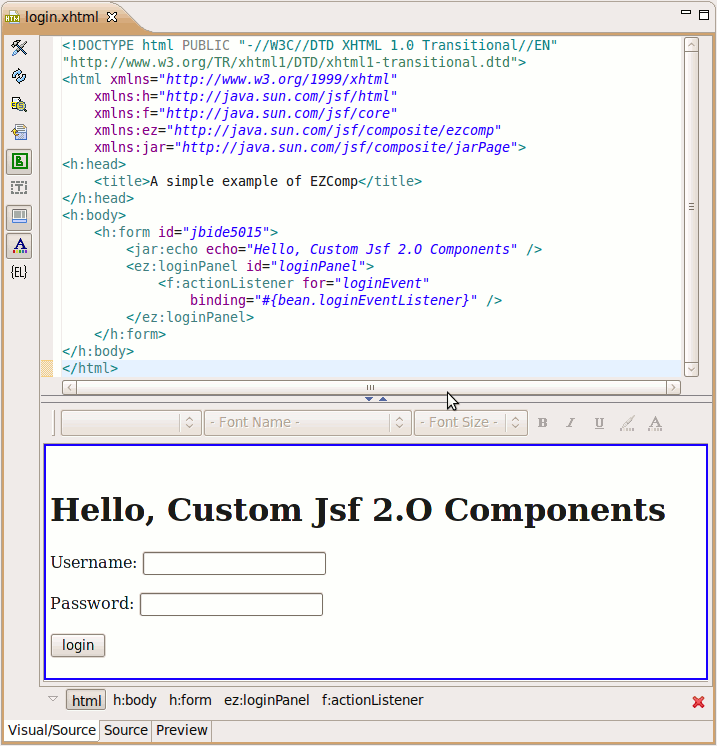
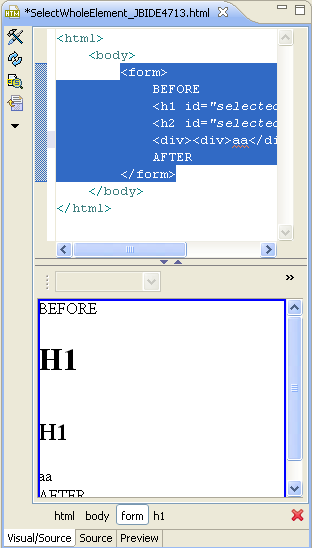

JSF2 Composite UI Components Support
|
| Composite UI Component Rendering |
Visual Editor can render Composite UI components from CLASSPATH jar's an Web root 'resources' folder.
It also supports rendering for parameters in custom tags.

Related Jira
|
General
|
| Selection bar |
Selection bar now always shows all tags in selected nodes hierarchy, so you can iterate it back and forth.

Related Jira
|
|
| Internal toolbar |
Visual editor toolbar was extended by three new tools:
- Show/hide none-visula tags
- Show/hide text formatting toolbar
- Show/hide selection bar
Related Jira
|
Facelets
|
| Facelets taglib import to Palette |
Now Facelets taglib can be imported to Palette View
Related Jira
|
|